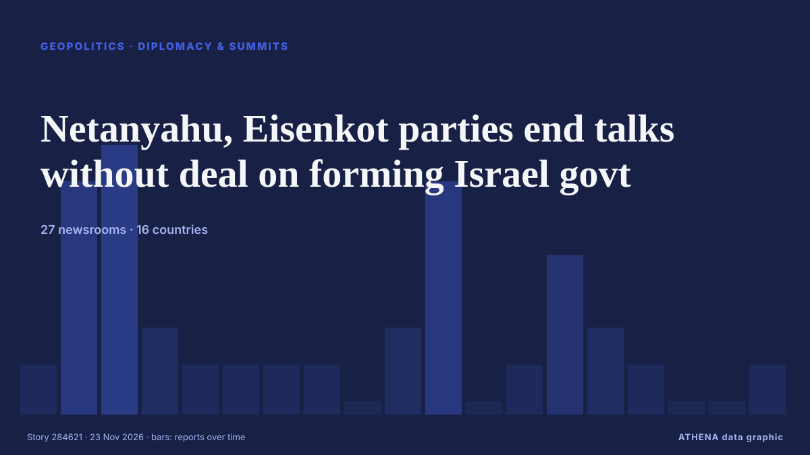

Geopolitics, Politics & Security
SponsoredPresented by  Cybernetics and Artificial Intelligence Lab Welcome to the Cybernetics and Artificial Intelligence Laboratory, established at the Department of Business Administration of the National and Kapodistrian University of Athens. The lab is headed by Professor Dimitrios Thomakos. The lab aims to do research that can be published in top venues. Our research uses tools and methods of Artificial Intelligence, and lies in the following areas: - Forecasting - Decision making - Cyber security - Finance We are always looking forward to collaborating with exceptional students!
Cybernetics and Artificial Intelligence Lab Welcome to the Cybernetics and Artificial Intelligence Laboratory, established at the Department of Business Administration of the National and Kapodistrian University of Athens. The lab is headed by Professor Dimitrios Thomakos. The lab aims to do research that can be published in top venues. Our research uses tools and methods of Artificial Intelligence, and lies in the following areas: - Forecasting - Decision making - Cyber security - Finance We are always looking forward to collaborating with exceptional students!

Diplomacy & summitsNetanyahu, Eisenkot parties end talks without deal on forming Israel govt
The parties of caretaker Israeli prime minister Benjamin Netanyahu and his rival Gadi Eisenkot concluded a new round of talks on Sunday without reaching an agreement on a possible coalition… from Al-Monitor
| 10 Nov | 287 |
|---|---|
| 11 Nov | 261 |
| 12 Nov | 265 |
| 13 Nov | 223 |
| 14 Nov | 180 |
| 15 Nov | 199 |
| 16 Nov | 272 |
| 17 Nov | 258 |
| 18 Nov | 244 |
| 19 Nov | 254 |
| 20 Nov | 216 |
| 21 Nov | 147 |
| 22 Nov | 115 |
| 23 Nov | 10 |
(LEAD) Seoul shares open over 2 pct lower amid AI fears
SEOUL, Nov. 23 (Yonhap) -- South Korean stocks opened more than 2 percent lower ... from Yonhap (English)
Netanyahu and Eisenkot parties resume talks to form Israel government
Former deputy governor tells Central Banking prime minister’s proposals are ‘stupid’ and ‘crazy’ from Central Banking
US Democrats clinch a historic House majority of at least 258 seats, the largest since 1992
The 258-seat tally was reached Nov 22 after Democrat Chuck Hubbard defeated Republican Representative Virginia Foxx in North Carolina. from The Straits Times
'Jewish terrorism': Eisenkot condemns West Bank arson attacks
Israeli opposition leader Gadi Eisenkot has condemned Israeli settler attacks in the occupied West Bank as "Jewish terrorism". from The New Arab
With US midterms underway, courts rebuff Trump's pressure on state election officials
Nov 3 - In the hours before polls opened for the US midterm elections on Tuesday, federal judges issued a series of rulings restricting the Trump administration's unprecedented efforts to pressure… from The Straits Times
US Intelligence Chief Says Putin Is 'Not America's Friend In Ukraine'
Trump’s description of Putin as a friend during the APEC summit drew criticism from European allies of Ukraine. from The Straits Times
Trump on ’60 Minutes’ Reflects on Midterm Loss, Death and Forgiveness: ‘I Do Hate Some of My Enemies’
President Trump told “60 Minutes” that he blames Republican candidates and the war in Iran for the party’s midterm defeat, and acknowledged that his mass deportation policy was “too tough.” Sitting… from Variety
Pentagon moves to restrict US-Canada defence ties
WASHINGTON: US Defence Secretary Pete Hegseth has imposed new restrictions on military cooperation with Canada, according to US media, as the Pentagon said Saturday it was refocusing the relationship… from Business Recorder
Six people killed as Russian attack destroys five-storey apartment building near Kyiv
A number of people are feared to be trapped under the rubble in Dymer. from TheJournal.ie
‘Just wrong’: British right distances itself from Trump after Putin ‘friend’ post
Reform deputy leader calls Russian leader ‘a murderous dictator’ after US president appears to endorse him UK politics live – latest updates Reform UK and the Conservatives have distanced themselves… from The Guardian
Endurance athlete swims in Strait of Hormuz to highlight Iran war's impact on wildlife
British endurance swimmer Lewis Pugh has swum in the North Pole and Antarctica to draw attention to environmental causes. from Mainichi (English)
Marcos pushes back on Trump’s claim of exclusive US food buys
President Ferdinand R. Marcos Jr. said the Philippines would not rely exclusively on US food and energy imports under the proposed trade deal between the two… from Daily Tribune
Nato chief pledges to defend Poland after Russian missile incursion
Warsaw accused Russia of provocation after two missiles struck southeastern Poland near the site of major European military exercises. from Free Malaysia Today
Bahrain says Iranian attack hits industrial facility, causes fire
Bahrain, which hosts the U.S. Navy's Fifth Fleet, says it has intercepted several Iranian aerial attacks over the past week. from Haaretz (English)
NATO will defend every inch of Polish territory, Rutte says
NATO will defend every inch of Polish territory, NATO Secretary General Mark Rutte said in Warsaw, a day after Poland said Russia violated its airspace with three objects that were probably two… from Cyprus Mail
Denmark pushes EU to tighten travel curbs on Russians after foiled plot
Denmark has urged EU members to take action against Moscow after saying it foiled an alleged Russian intelligence plan to assassinate a US-Ukrainian rapper. from The New Arab
Trump vows permanent deal to block Iran's nuclear ambitions
US president says he would not allow future Washington administration to permit Iran to acquire nuclear weapon. from TRT World
US denies Iranian account that missile damaged F-16 over Gulf
Nov 21 - US Central Command on Saturday denied an Iranian account that its forces had fired a missile at a 16 fighter jet over the Gulf, damaging the aircraft and forcing it to make an emergency… from The Straits Times
Saudi-Led Coalition Says Downed 3 Houthi Missiles Headed For Riyadh
The coalition said that air defences intercepted and destroyed (3) ballistic missiles launched by the terrorist Houthi militia toward Riyadh. from NDTV World
Somalia accuses UAE of ‘invasion’, expels ambassador
Somalia has ordered the United Arab Emirates (UAE) ambassador to leave the country within 72 hours and recalled its own envoy from Abu Dhabi, escalating a diplomatic dispute between the… from Barbados Today
Iraqi forces strike compromise with powerful pro-Iran militia, security officials say
BAGHDAD, Nov 19 - Iraq has reached a compromise with the powerful Iran-backed militia Kataib Hezbollah, three senior security officials said, after Prime Minister Ali al-Zaidi readied security forces… from The Straits Times
Trump defends Putin after trilateral with Xi
President Trump, China's Xi Jinping and Russia's Vladimir Putin appeared to make little progress in their trilateral meeting in Shenzhen, China. from CBS News (World)
South Africa hit back against Ireland in thrilling Dublin test
Government needs to be honest with us about the threats we face. from Irish Independent
Araqchi says Iran wants diplomacy to end war; Trump says terms unacceptable
Nov 20 - Iran's Foreign Minister Abbas Araqchi said Tehran still hoped diplomacy could end its war with the United States, while US President Donald Trump said Iran wanted a deal but one that was not… from The Straits Times
Israeli strike kills three in vehicle distributing aid in Gaza
JERUSALEM: An Israeli strike killed three Palestinians in a vehicle carrying papers and food for the World Central Kitchen charity in Gaza City on Saturday, according to Gaza’s health ministry and… from New Straits Times
Zelenskyy says NATO membership for Ukraine remains under discussion and would benefit both
Ukrainian President Zelenskyy said Ukraine’s NATO membership is being discussed with France and the US as the clearest security guarantee. from Ukrainska Pravda (English)
Denmark expels Russian diplomat over attempt to kill Ukrainian rapper
Denmark has decided to expel a Russian diplomat after suspecting Russia’s involvement in an attempted assassination of a Ukrainian rapper. from Arab News
El Salvador's Bukele to run for third presidential term
Last year, the Central American nation amended its constitution to abolish presidential term limits and allow Bukele, in power since 2019, to seek reelection indefinitely. from Le Monde (English)
Iraqi security forces deploy in Iran-backed militia stronghold
By Maher Nazeh, Muayad Hameed and Eman Abouhassira JURF AL-SAKHAR, Iraq, DUBAI, Nov 20 (Reuters) - Iraqi security forces deployed inJurf al-Sakhar, a stronghold of the Kataib Hezbollaharmed group, on… from Al-Monitor
Russia must feel what war is like: Crimean Bridge will not stand as it is legitimate target for Ukraine – Zelenskyy
President Volodymyr Zelenskyy defended strikes on the bridge linking Russia to occupied Crimea, saying Moscow uses it to transport weapons and that Kyiv will continue responding to Russian aggression. from Ukrainska Pravda (English)
Poland condemns Russian ‘provocation’ after 3 airspace violations
The incursions happened as Poland was set to hold military exercises for the 'Coalition of the Willing', a group of Ukraine's allies, on Friday. from Free Malaysia Today
Yemen's Houthis threaten to strike Saudi Red Sea ports
Yemen’s Houthis threatened on Friday to attack Saudi Arabia’s Red Sea ports if Saudi-led coalition forces struck the strategic Red Sea port of Hodeidah. from Business Recorder
UK and EU strike ‘landmark’ deal to rebuild ties after Brexit
🇬🇧🇪🇺 A fresh start after #Brexit? The #UK and #EU have agreed on a landmark #deal to rebuild ties, following a summit in Brussels this Friday. from France 24 English
US Treasury presses Singapore and Malaysia on Iran sanctions
US officials urge Singapore and Malaysia to crack down on Iranian oil transfers, aviation links and front companies. from The New Arab